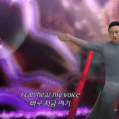
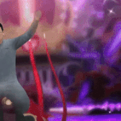

그래서 부르게 만들어드렸습니다
그래서 부르게 만들어드렸습니다
조혜련 버전 만들어줘
캬 슈카형 여기야
곡이 좋긴하네
이정도 창작을 AI로 그냥 나오는 시대란게 이젠 실감난디
너무 슈카목소리가 없는거같은데 ㅋㅋㅋㅋㅋㅋㅋㅋ
뭔가 창팝느낌 나누 ㅋㅋㅋㅋ
이 분야 탑은 옥냥이임
옥냥이 레오는 아직도 간간히 듣는다
얼굴만 슈카 박아넣고 슈카목소리는 하나도 안들어잇네
이게 고음 추출을 복면가왕에서 해와서 그럼 ㅋㅋ
욧시 이걸로 복면가왕 한 번 더 나가자
서새봄, 랄로 AI도 좋고 트로트 버젼 갑자기, 러브어택도 좋음
슈카 목소리 첨가향 0.0000001% 이런 건가?
사이버가수 아담 불러와


https://youtu.be/Vc45kkH73kA&t=438
이 형 노래 부를때랑 비교해보면 ㄹㅇ 비슷한 느낌 남
이거 하나하나 다 뜯어서 추출하느라 힘들었다...
원곡의 음색이 슈카 필터를 뚫어버리는 듯, 이건 누군가 한번 커버해서 열화?된 곡을 다시 슈카목소리로 변환하면 더 잘나올지도 모르겠는데
슈카 목소리 거의 안느껴진다.
Ai 노래는 아직 티가 많이나는거
같아서 잘 안 듣게됨
슈카햄은 노래부를때 목소리 따로 있음
복면가왕 나온거 찾아보셈
슈카가 복면가왕도 나옴?ㅋㅋㅋ
슈카친구들 내부에선 기록말소급 흑역사ㅋㅋㅋㅋㅋㅋ
맞음 복면가왕 목소리로 만든 거임 ㅋㅋ
뚱뚱한 어른이 되었나요
카더가든 느낌나네